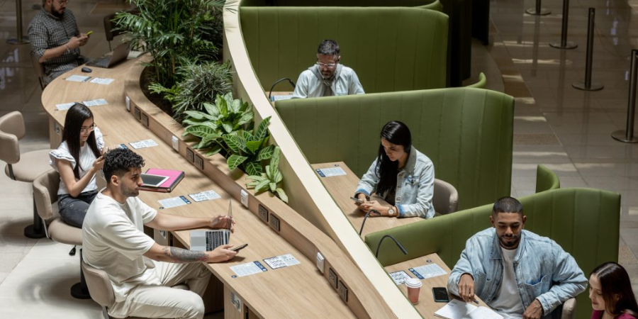
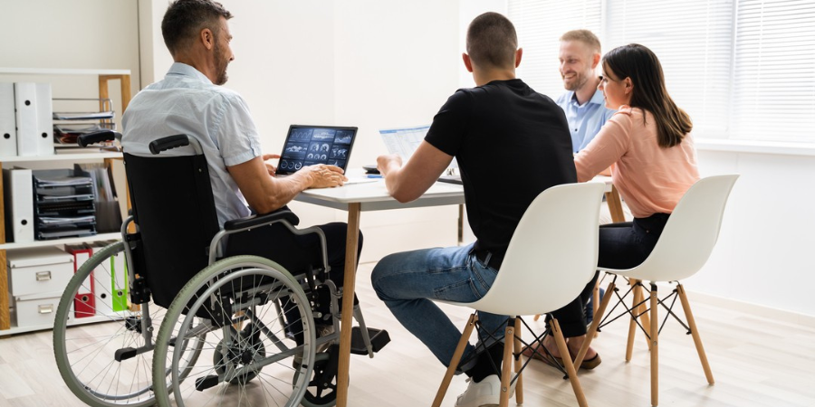

ESTUDIO RETROSPECTIVO – BalancePro Hub
Introducción
Objetivos del estudio:
El presente estudio retrospectivo tiene como objetivo documentar y analizar la trayectoria, evolución, logros y desafíos de BalancePro Hub desde su fundación en 2025. A través de este análisis se busca comprender cómo la empresa ha construido su identidad, influido en su comunidad y generado impacto en el ecosistema de coworking en Medellín, Colombia.
También pretende servir como guía estratégica para el crecimiento futuro, fortalecimiento organizacional y consolidación de la cultura empresarial basada en bienestar, tecnología y comunidad.
Metodología utilizada
Este documento fue elaborado con un enfoque cualitativo y estructural, utilizando herramientas como:
- Entrevistas internas y testimonios del fundador, CEO y miembros activos de la comunidad.
- Análisis documental de materiales institucionales (misión, visión, planes de acción, diseño cultural, etc.).
- Observación participativa de las dinámicas diarias del coworking.
- Revisión bibliográfica sobre coworking, cultura organizacional e innovación tecnológica en América Latina.
- Técnicas de análisis sistémico, como mapas de actores, variables, motricidad y dependencia.
Historia del Coworking en Colombia
Evolución del coworking a nivel global:
El concepto de coworking surge oficialmente en San Francisco en 2005 como una alternativa al trabajo tradicional. Rápidamente se expandió por Europa, Asia y América Latina, impulsado por el auge del trabajo remoto, el crecimiento del ecosistema emprendedor y el deseo de entornos laborales más flexibles y colaborativos.
Actualmente, el coworking ha dejado de ser una moda para convertirse en un modelo consolidado de trabajo y cultura organizacional. Espacios como WeWork, Impact Hub o Mindspace han marcado una pauta global, adaptando sus servicios a las necesidades tecnológicas, creativas y humanas del siglo XXI.
Crecimiento y tendencias en Colombia:
En Colombia, el coworking comenzó a ganar protagonismo entre 2015 y 2018, principalmente en Bogotá, Medellín y Cali. Empresas como Selina, Tinkko y Co-Work Latam dieron forma a este nuevo estilo de trabajo.
Después de la pandemia de 2020, el modelo se consolidó aún más por la necesidad de espacios seguros, colaborativos y menos rígidos. Medellín, en particular, se convirtió en un polo de innovación y atracción de talento, impulsando nuevos espacios enfocados no solo en lo laboral, sino también en el bienestar.
Tendencias actuales en Colombia:
- Enfoque en comunidades especializadas (tech, diseño, impacto social)
- Coworking con experiencias personalizadas
- Integración de IA y herramientas digitales
- Inclusión de espacios de bienestar como salas de meditación, zonas verdes y cafeterías internas
BalancePro Hub fue fundado en Medellín, Colombia, en el año 2025 por Johan Stiven, con el propósito claro de crear un espacio donde el trabajo profesional no estuviera reñido con la salud mental, el bienestar emocional y la creatividad libre.
Johan, programador de formación y creativo por naturaleza, experimentó personalmente las dificultades de trabajar en ambientes tradicionales donde se descuidaba lo humano. Esta vivencia dio origen a una idea potente: crear un coworking que integrara espacios funcionales, diseño amigable, IA personalizada y comunidad real.
Desde su fundación, BalancePro HubLa visión inicial fue clara:
Crear un lugar donde programadores, diseñadores y emprendedores pudieran crecer sin sacrificar su bienestar.- Johan Stiven
Actores Clave del Sistema
Johan Stiven (Fundador)
Descripción:
Fundador y creador de la visión inicial de BalancePro Hub. Profesional en programación y diseño digital, Johan representa el origen humano del proyecto. Es el motor que unió la necesidad de espacios equilibrados con la tecnología cercana y amigable.
Historia:
La idea de BalancePro Hub nació cuando Johan experimentó personalmente el agotamiento laboral, la desconexión emocional con su trabajo y la necesidad de crear en ambientes sanos. Esa vivencia lo llevó a imaginar un coworking diferente, con alma, comunidad y herramientas tecnológicas integradas. En 2025, da el primer paso para convertir esa idea en realidad.
Problemas enfrentados:
- Transformar una necesidad personal en un modelo empresarial viable
- Crear desde cero una marca con identidad fuerte y humana
- Gestionar múltiples roles en etapas tempranas (liderazgo, visión, diseño, marketing)
- Enfrentar escepticismo por parte de actores tradicionales del mercado
Bleidis (CEO)
Descripción:
Líder estratégica y co-creadora del crecimiento organizacional. Su rol es asegurar que BalancePro Hub evolucione, sin perder su esencia. Representa la dirección, el orden, la toma de decisiones y la conexión con aliados externos.
Historia:
Se unió desde los primeros días como figura clave en la estructuración organizativa. Con una mirada sensible y orientada a las personas, ha guiado la consolidación del equipo, el modelo de trabajo horizontal y la visión de expansión. Bleidis equilibra la gestión con la empatía.
Problemas enfrentados:
- Establecer estructura organizacional sin jerarquías rígidas
- Conciliar necesidades financieras con la filosofía de bienestar
- Coordinar equipos creativos con estilos de trabajo diversos
- Mantener motivación interna en fases de incertidumbre
BalanceBot (IA personalizada)
Descripción:
Asistente virtual con identidad propia. Diseñada para acompañar, recordar tareas, proponer pausas activas y facilitar la vida laboral sin invadir. Representa el puente entre tecnología e interacción emocional.
Historia:
Surge como una solución innovadora frente a la saturación digital. Johan la conceptualiza como “la IA que te cuida”. Fue prototipada en 2025, inspirada en modelos conversacionales como ChatGPT, pero adaptada al coworking. BalanceBot tiene una personalidad amable, ligera y empática.
Problemas enfrentados:
- Crear confianza entre usuarios para aceptar asistencia de una IA
- Adaptar su lenguaje y sugerencias a perfiles diversos
- Integrarla sin que parezca un sistema invasivo
- Equilibrar tecnología y privacidad de datos
Comunidad de coworkers
Descripción:
Son los usuarios reales del espacio: diseñadores, programadores, freelancers, creadores, estudiantes y emprendedores. Su diversidad alimenta la riqueza cultural del hub.
Historia:
La comunidad nació con los primeros aliados cercanos, curiosos por un espacio distinto. Se fue ampliando orgánicamente gracias a actividades, voz a voz y conexión auténtica. Representa el corazón del proyecto.
Problemas enfrentados:
- Crear sentido de pertenencia desde los primeros días
- Gestionar expectativas distintas entre perfiles (introvertidos/extrovertidos)
- Evitar la fragmentación de la comunidad con el crecimiento
- Mantener cercanía y horizontalidad sin perder foco profesional

Variables Clave del Sistema
Cultura del Bienestar
Descripción:
Es la base emocional y funcional de BalancePro Hub. Se refiere a la forma en que se prioriza la salud mental, física y emocional de las personas que integran la comunidad. Esta cultura se traduce en espacios de descanso, pausas activas, horarios flexibles y una actitud libre de presión excesiva
Historia:
La cultura del bienestar fue parte de la visión fundacional. Desde el principio se diseñaron zonas para respirar, desconectarse y reconectar. Se inspiró en modelos nórdicos, coworkings de Corea del Sur y en experiencias personales de los fundadores. A diferencia de muchos espacios que hablan de bienestar pero no lo practican, BalancePro lo convirtió en eje operativo.
Problemas enfrentados:
- Romper con la creencia de que “más horas = más productividad”
- Incluir dinámicas de descanso sin que sean vistas como pérdida de tiempo
- Sostener la cultura cuando hay presión externa por rendimiento
- Asegurar que todos, incluso líderes, participen del modelo de bienestar
Equilibrio vida-trabajo
Descripción:
Es el principio que busca que cada miembro pueda crecer profesionalmente sin sacrificar su vida personal, emocional o creativa. Este equilibrio no se impone, se cultiva: con libertad de horarios, respeto por los ritmos individuales y espacios compartidos donde también se vive.
Historia:
Surge como una necesidad real entre quienes iniciaron el proyecto. El desequilibrio vivido en anteriores entornos laborales inspiró la construcción de un espacio donde trabajar no significara agotarse. El concepto fue integrado desde la arquitectura hasta la IA BalanceBot, que incluso propone pausas cuando detecta sobrecarga.
Problemas enfrentados:
- Enseñar a los usuarios a regular su propio ritmo sin depender de estructuras rígidas
- Lidiar con usuarios que traen hábitos de sobreexigencia
- Garantizar que el equilibrio no se vuelva una excusa para procrastinar
- Evaluar productividad sin indicadores tradicionales de control
Colaboración y cercanía
Descripción:
Es uno de los valores diferenciales de BalancePro. Aquí se cree que las ideas se enriquecen en la conversación, el compartir, y el apoyo mutuo. La colaboración no se fuerza, se facilita. La cercanía rompe barreras jerárquicas y construye comunidad.
Historia:
Desde los primeros días, la comunidad fue concebida como una red de apoyo. En lugar de oficinas aisladas, se diseñaron zonas de encuentro. Los eventos, talleres y canales internos promueven la interacción constante. Incluso las decisiones estratégicas se consultan entre miembros activos.
Problemas enfrentados:
- Fomentar colaboración sin invadir el espacio personal de otros
- Evitar que el exceso de cercanía disminuya la profesionalidad
- Incluir a nuevos miembros sin que sientan que llegan tarde a la cultura
- Gestionar conflictos o desacuerdos de forma sana y abierta
Innovación Accesible
Descripción:
En BalancePro Hub, la innovación no es solo tecnología de punta; es tecnología útil, humana y cercana. Se trata de facilitar el día a día de las personas sin necesidad de que sean expertas. La IA BalanceBot es el ejemplo perfecto: un asistente que acompaña, sugiere y ayuda de manera amable, sin complicar la experiencia.
Historia:
Este valor nace del deseo de usar la tecnología para hacer la vida más fácil, no más estresante. Desde la etapa inicial, se propuso una inteligencia artificial que no solo automatizara, sino que acompañara. La accesibilidad también se ve en lo visual, en el lenguaje que se usa y en la forma de comunicar internamente.
Problemas enfrentados:
- Superar el miedo o desconfianza hacia la inteligencia artificial
- Traducir conceptos tecnológicos a experiencias sencillas y útiles
- Encontrar el equilibrio entre innovación y simplicidad
- Mantener la coherencia tecnológica sin elevar los costos ni volverlo excluyente

Espacios Físicos Simbólicos
Descripción:
Cada rincón de BalancePro Hub tiene intención. Los espacios no solo cumplen una función operativa, sino que transmiten cultura, emociones y valores. Desde los murales hasta la distribución del mobiliario, todo está pensado para que los usuarios se sientan seguros, motivados y creativos.
Historia:
El diseño se inspira en corrientes de arquitectura emocional, coworkings del norte de Europa y referencias visuales de películas animadas futuristas (como Big Hero 6 o Wall·E). Incluso los colores, formas y materiales buscan reflejar equilibrio y calidez. Se rompió con la idea de "oficina blanca y seria" para crear algo con vida.
Problemas enfrentados:
- Justificar la inversión en diseño no tradicional
- Adaptar los espacios para distintos perfiles sin perder identidad
- Evitar que el lugar se vuelva demasiado informal o recreativo
- Renovar simbología constantemente sin perder coherencia
Experiencia del Usuario
Descripción:
Más allá de ofrecer escritorios, BalancePro se enfoca en cómo se siente la persona que entra al espacio. Desde el primer contacto digital hasta el uso diario del coworking, todo busca ser cálido, fluido y con sentido. La experiencia está al centro, no el producto.
Historia:
Este enfoque nació del análisis de espacios impersonales donde todo se sentía rígido o transaccional. BalancePro optó por una experiencia tipo “hogar creativo con propósito”. La integración con IA, el lenguaje visual y la interacción humana forman parte de una narrativa emocional.
Problemas enfrentados:
- Crear una experiencia estándar sin perder la personalización
- Medir la experiencia sin depender solo de encuestas
- Alinear la experiencia física con la digital
- Cumplir expectativas diversas sin diluir la identidad